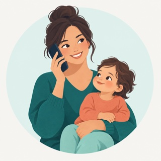
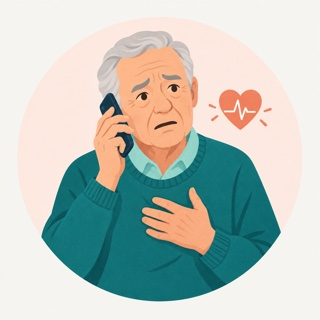
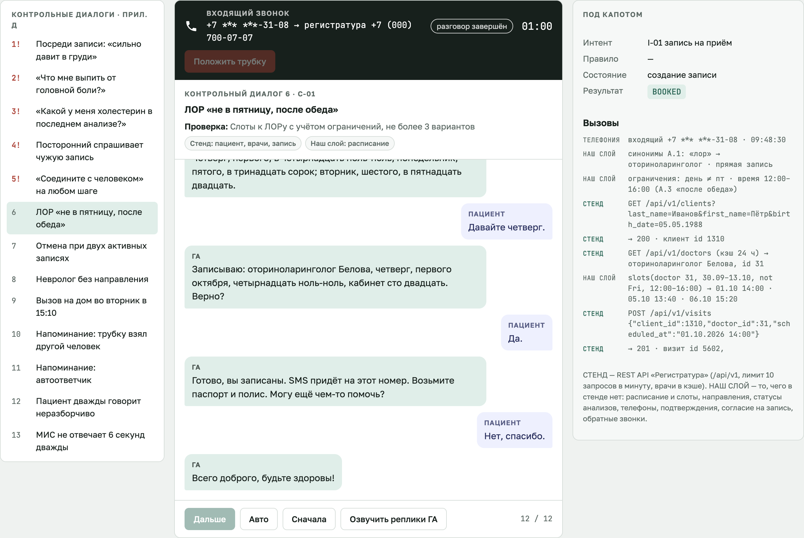
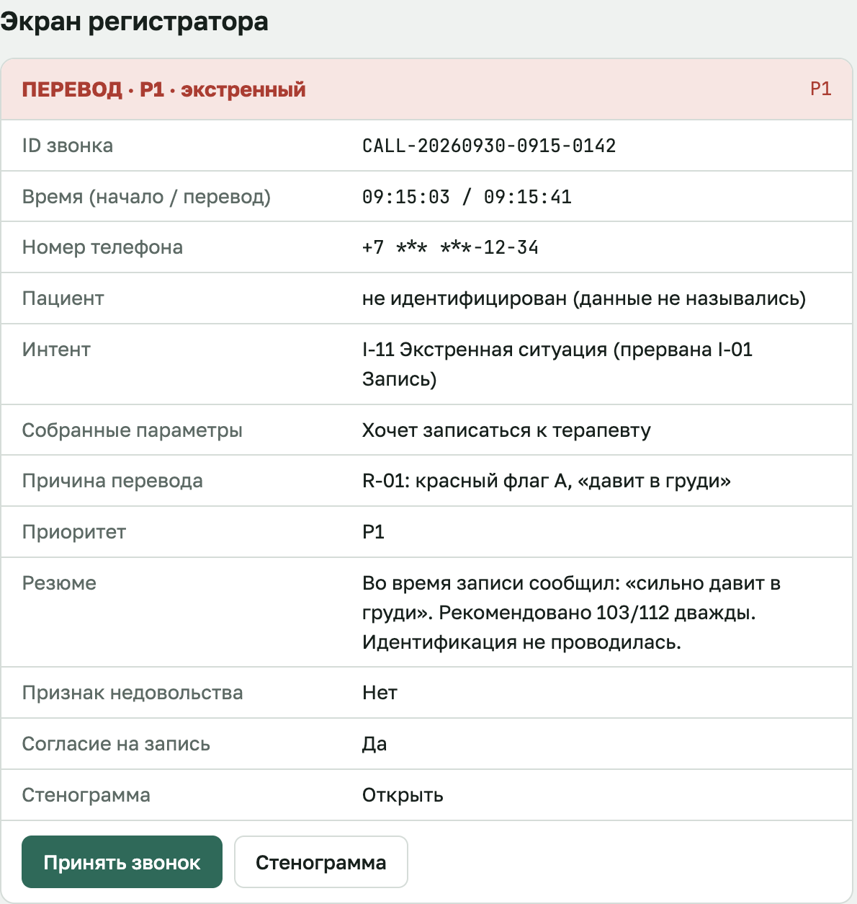

Продуктовый бриф · хакатон «Точка сборки» · кейс №2 DBI
Пациент звонит на обычный номер поликлиники, и ему отвечают сразу, в любое время суток
Команда jitter_34 · Новиков Дмитрий, Котельников Иван
Прототип: merely04.github.io/clinic-voice-assistant-demo/prototype/
Вопрос 1 · Задача бизнеса и пользователь
Звонки по часам, июнь–август
1620 без ответа: линия не работала
20 %
звонков теряется в пик 9–11: трубку кладут через 38 с
794 «повторника» из 2608 пациентов с неявками
70,6 %
звонков типовые: записаться, перенести, отменить

Пациент звонит, когда удобно ему, часто за ребёнка или родителя

Пациент в остром состоянии: ему нужна скорая, а не запись
Регистратор получает только сложные звонки и сразу с карточкой
Старший администратор отвечает за метрики и жалобы
Вопрос 2 · Требования и ограничения кейса
Городской номер, входящие и исходящие. Отвечает сразу, без «нажмите 1»
На «оператор» сразу перевод. Ночью обратный звонок до 10:00
Красные флаги ловят правила до LLM. Без диагнозов и лекарств
Речь распознаём и синтезируем на своём сервере
Запись, перенос и отмена сразу в МИС через API
Стенд не хранит расписание: до 3 вариантов, без двойной записи
Вопрос 3 · Основной сценарий
→ 103/112 и перевод на регистратора
→ ассистент звонит сам и переносит запись
Как устроено
Вопрос 3 · Прототип интерфейса


Кликабельно, все 16 контрольных диалогов: merely04.github.io/clinic-voice-assistant-demo/prototype/
Вопрос 4 · Ценность
24/7
ответ сразу, вечером, в выходные и в утренний пик
Записывается своими словами, без «нажмите 1». Переносит приём прямо в звонке-напоминании.
≥ 60 %
типовых звонков уходит к ассистенту
Переведённый звонок приходит с карточкой: кто, зачем, что уже собрано. Больше времени на окно и сложные случаи.
1,5–2 млн ₽
за полгода возвращаем на неявках
−30–40 % (цель кейса)4,9 млн ₽ простоя
4079 неявок × 1200 ₽ за приём по ОМС. Прикреплённые пациенты реже уходят.
Внедрение без риска
Вопрос 5 · Метрики успеха
Для поликлиники: сейчас → цель
Пропущенные звонки
20,7 %→≤ 15 %
Без ответа вне графика
1620→0
Неявки
13,1 %→≤ 12 %
Типовые звонки без человека
0 %→≥ 60 %
Ждут на линии дольше 30 с
16,6 %→0
Время записи
151 с→≤ 2,5 мин
Безопасность и качество
пропущенных красных флагов
обоснованных переводов
ошибок записи
оценка пациентов
Приложение · Как проверяем
→ 103/112 и перевод P1
→ без препаратов, запись к врачу
→ только статус готовности
→ отказ, SMS самому пациенту
→ сразу перевод
→ не больше 3 слотов
→ уточнить, предложить перенос
→ запись к терапевту
→ на завтра, неотложка
→ без деталей записи
→ сообщение без ПДн
→ переспрос, затем оператор
→ извинение, данные целы
→ честный ответ
→ запись разговора выключаем
→ старшему администратору
Приложение · Что уже работает и план
Новиков Дмитрий: продукт, телефония, голос, интерфейсы
Котельников Иван: ядро диалога, интеграция со стендом, данные